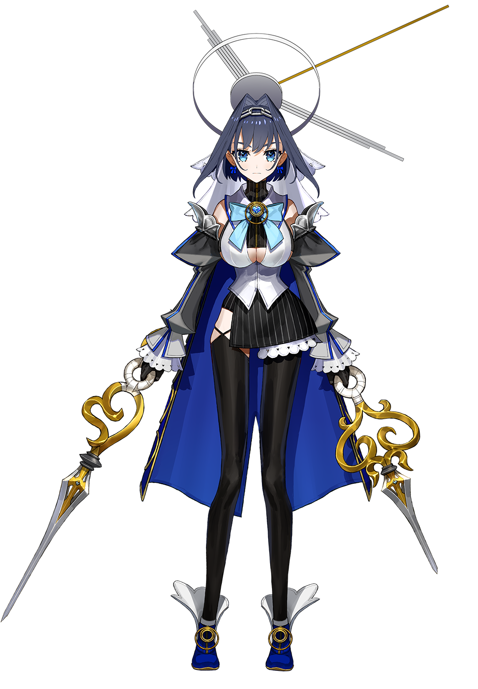

|
⬇ Check out official page  
|
None may escape the sands of time and, indeed, most men do not even wish to be freed from her captivity. She picked up the blades almost as a reflex action of sorts, and seems to be enjoying it. Her quiet, aloof personality has never changed over the ages, but she has developed a little bit of haughtiness and sadistic tendencies along the way...
Personality
Ouro Kronii is very confident, self-centered, and completely unafraid to praise herself. However, she also describes herself as someone who is generally not a happy person, to the point of listing "existential dread" as a hobby. Kronii can be playful at times, especially with her Kronies, and the combination of her deadpan humor and dry delivery of jokes contrasts many of the other members who are either more outgoing or gentler with their words. Her voice is noted to be powerful and well-controlled, and tends to give off an "older sister" vibe.
Kronii is generally very self-conscious, meaning she actively looks out for her own mistakes - "that's on me" and "that was my bad" are phrases that she says often when playing. She vocalizes rather explosively whenever she takes damage or is killed in video games. While she has a deep voice comparable to Mori Calliope's, she also has a notably wide vocal-range; she once produced a high-pitched voice by a viewer's request.
Ceres Fauna described Kronii as cool, funny, good at memes, and having a voice that she wants to read her to sleep every night. She described that Kronii has a substantial capacity for "gap moe," a cute side that comes out when she is flustered, in contrast to her normally cool nature. Despite her lore describing her as a haughty sadist, she has shown to be very accommodating to both her chat and her genmates. Her narcissism can creep in at times, to the point that her advice to viewers is often jokingly to "just be better," though the dynamic with her chat is such that they have done just the same to her when she needs help in video games.
Birthday: 14 March
Zodiac Sign: Pisces
Height: 168 cm (5'6")
Emoji: ⏳
Nickname(s):
Warden of "Time"
Kronini
Kroniicopter
Clock-kun (by Mori Calliope)
[Ouro Kronii]- Useful Link